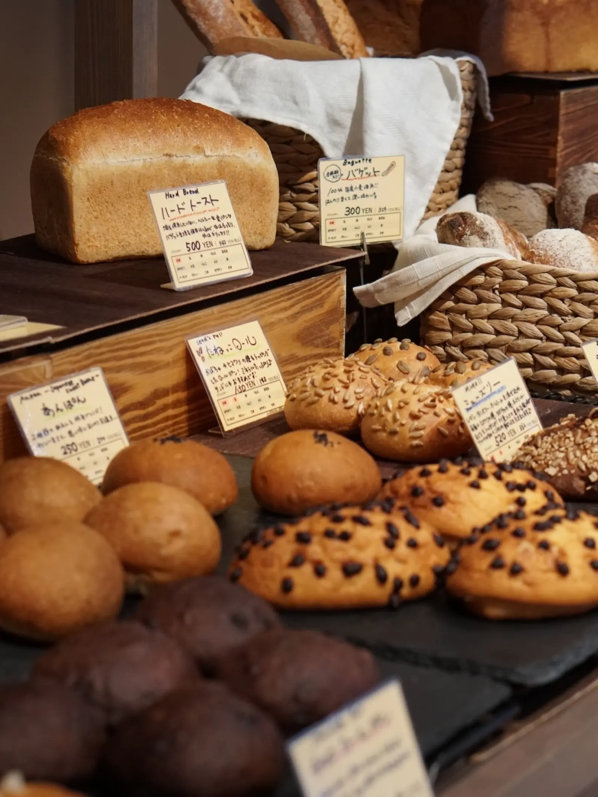
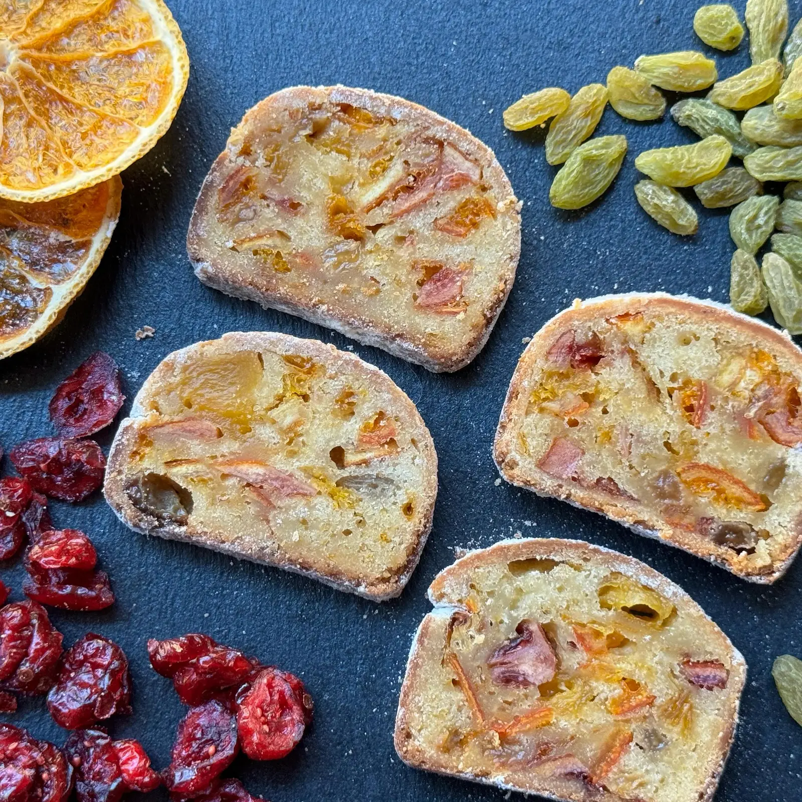
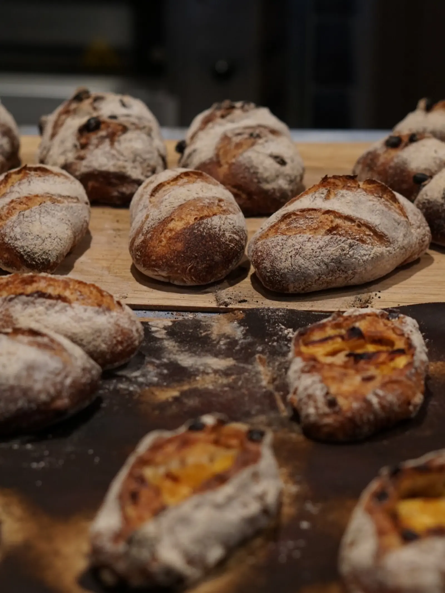
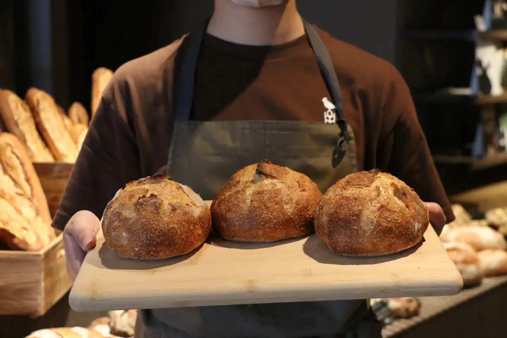
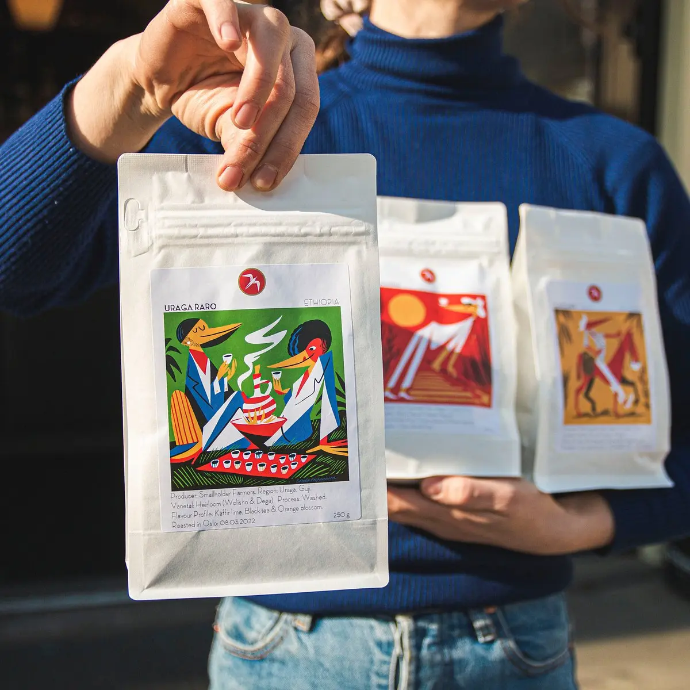
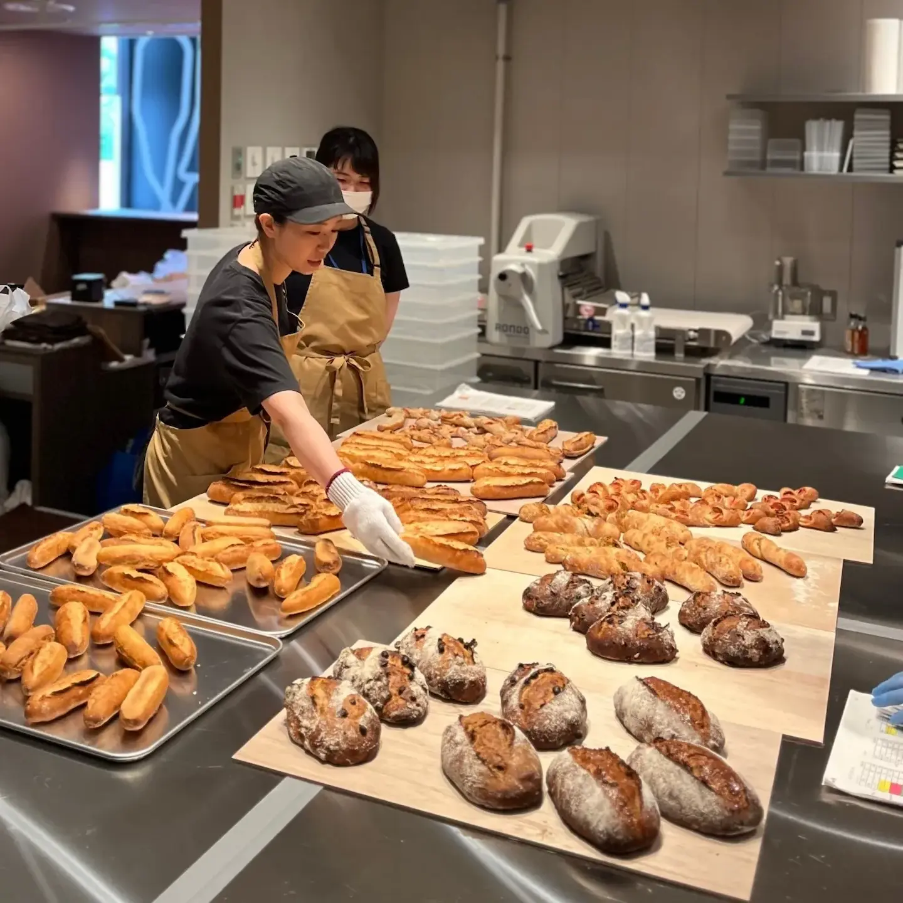

TAIPEI — SINCE 2026
每一天
從一份好麵包
一杯好咖啡開始
我們「希望成為讓人每天都想吃」的麵包店。選用日本安心的原料，細心做好每一份麵包。
來自熊本的手作烘焙坊，
BREADAY
2023年，她帶著累積多年的深厚底蘊，在家鄉熊本創立了屬於自己的烘焙品牌。
我們不盲目追求流行，而是將目標放在製作出能留在顧客記憶深處的「日常美味」。
BREADAY
每天都用心揉捏烘焙，只為將最純粹的麵包香，傳遞到您的生活裡。

來自挪威奧斯陸的咖啡經典，
FUGLEN COFFEE
1963年，FUGLEN 誕生於挪威奧斯陸，走過一甲子歲月；2012年，將這份北歐咖啡帶到東京澀谷，成為世界咖啡迷熟悉的經典印記。
以明亮細緻的淺焙風格聞名，曾獲《紐約時報》盛讚為「世界最棒、值得專程搭飛機前往品嚐的咖啡」。
從挪威到日本，如今不必遠行——
BREADAY 將這份北歐經典風味帶到台北，讓一杯 FUGLEN，成為麵包日常裡最迷人的搭配。

職人的每一天
BREADAY 烘焙坊裡的日常片刻。

嚴選食材
選用日本安心的原料，從選料開始講究。